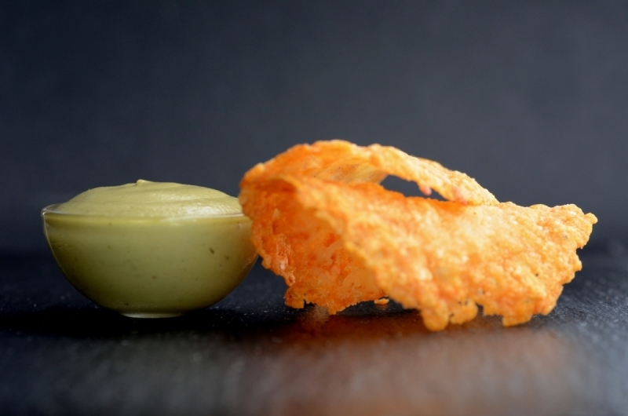

Pesto aérien avec sa tuile de parmesan. 
 30 min
30 min- Difficulté :

- Technique(s) : Gélification
Ingrédients
gx
xanthane
- 1 sachet de 2g de xanthane
- 1 botte de basilic
- 150mL d'eau
- 250g d'huile d'olive
- 100g parmesan
- sel, poivre

Préparation
- Pour réaliser les tuiles de parmesan, disposer le parmesan en petits tas de 5cm de diamètre sur un papier sulfurisé. Placer 3 minutes à four chaud (180°C / Th6). Lorsque le parmesan a fondu et est légèrement doré, sortir rapidement la plaque du four et saisir les disques de parmesan et les disposer sur un rouleau à pâtisserie. Laisser refroidir : les tuiles prendront leur forme en quelques minutes.
- Pour préparer le pesto, mixer le basilic dans l’eau avec le Xanthane.
- Ajouter l’huile d'olive progressivement, comme pour une mayonnaise, tout en mixant. Assaisonner selon votre goût, tout en continuant de mixer. On obtient alors une préparation mousseuse.
- Dresser l'émulsion avec une tuile de parmesan.